Mengakses Notes & Password Tanpa Koneksi Internet
Melanjutkan tutorial kemarin tentang membuat notes & password manager sendiri dengan Cryptomator dan Cloudflare R2, dimana dibutuhkan koneksi internet untuk bisa mengakses notes & password yang disimpan di cloud. Jadi sekarang saya akan menulis tutorial bagaimana cara agar kita bisa mengakses notes & password tersebut tanpa koneksi internet.
Agar kita bisa mengakses notes & password kita tanpa perlu koneksi internet, saya menggunakan aplikasi bernama S3Drive. S3Drive adalah aplikasi yang mudah digunakan untuk mengubah back-end apa pun yang kompatibel dengan S3, WebDAV, atau Rclone menjadi penyimpanan file terenkripsi pribadi Anda.
S3Drive tersedia untuk Windows, macOS, Linux, Android, iOS, dan Web. S3Drive adalah aplikasi gratis, namun tersedia juga opsi untuk berlangganan maupun sekali beli yang memberi fitur lebih banyak daripada versi gratis. Sekarang kita mulai tutorial bagaimana cara mengakses notes & password kita tanpa koneksi internet dengan S3Drive. Karena saya pengguna ponsel Android, maka saya akan memberikan tutorialnya untuk ponsel Android. Untuk proses ini masih diperlukan koneksi internet ya.
Pertama-tama silahkan install aplikasi S3Drive di Play Store. Setelah proses install selesai, buka aplikasi S3Drive dan Anda akan melihat tampilan seperti gambar dibawah ini. 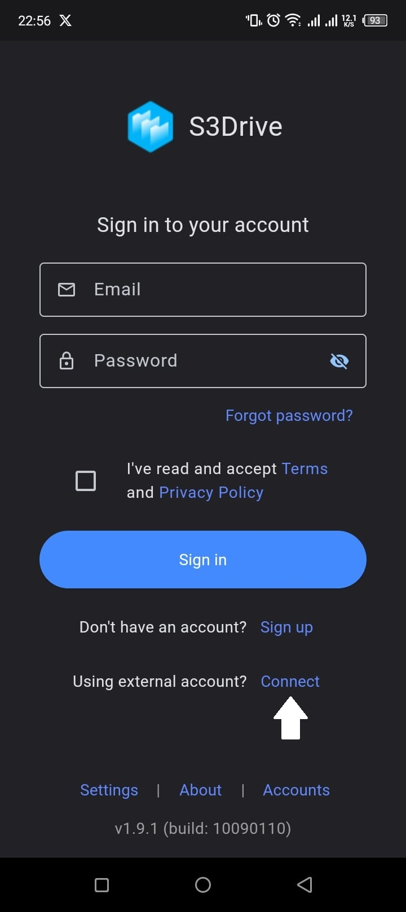
Klik Connect dan Anda akan melihat tampilan seperti gambar dibawah ini.
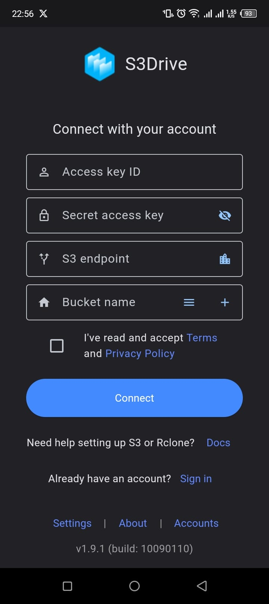Silahkan isi sesuai dengan API token yang kita buat kemarin untuk mengakses bucket kita di Cloudflare R2 melalui aplikasi pihak ketiga. Bila sudah silahkan centang privacy & policy kemudian klik tombol Connect dan Anda akan melihat tampilan seperti gambar dibawah ini.
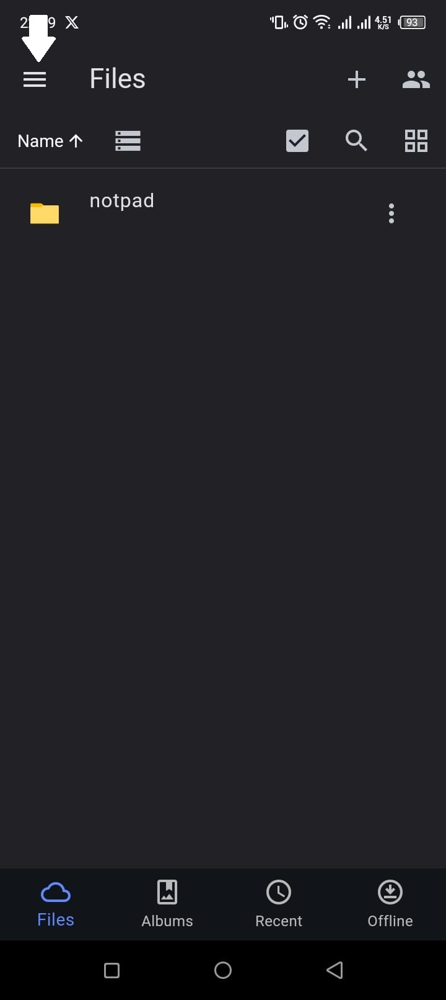Kemudian klik tiga garis yang ada di pojok kiri atas dan Anda akan melihat tampilan seperti gambar dibawah ini.
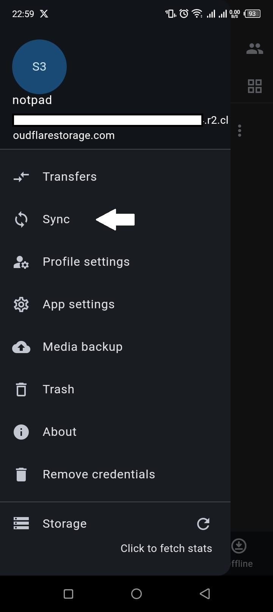Kemudian klik menu Sync dan Anda akan melihat tampilan seperti gambar dibawah ini.
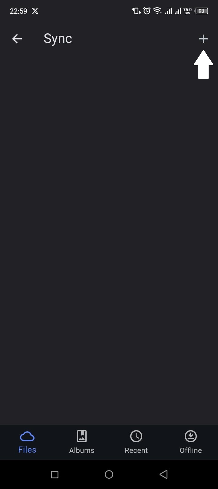Kemudian klik tombol + di pojok kanan atas dan Anda akan melihat tampilan seperti gambar dibawah ini.
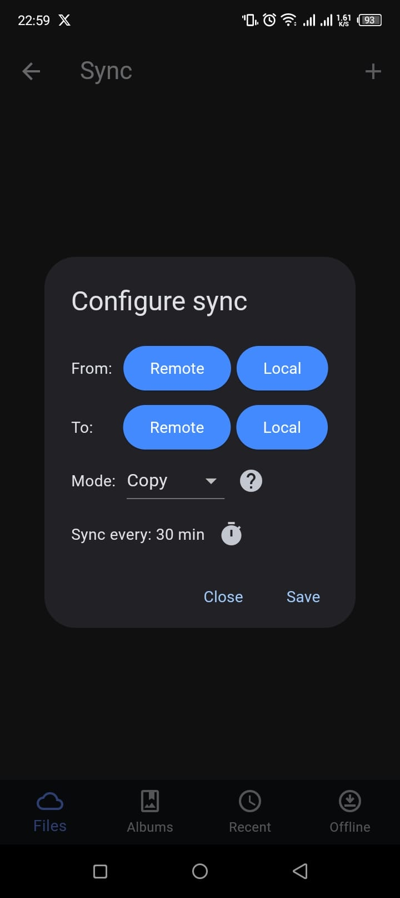Pada kolom From klik tombol Remote dan Anda akan melihat tampilan seperti gambar dibawah ini.
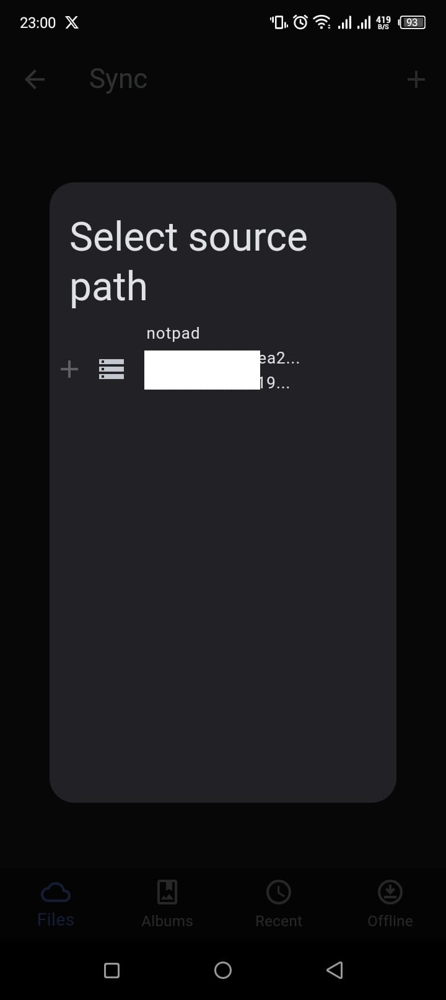Klik pilihan yang muncul tersebut kemudian pada kolom To klik tombol Local lalu pilih dimana lokasi yang akan digunakan untuk meletakkan file dari bucket atau cloud nantinya. Disini saya membuat folder baru bernama S3Drive untuk meletakkan file saya nantinya. Setelah itu Anda akan melihat tampilan seperti gambar dibawah ini.
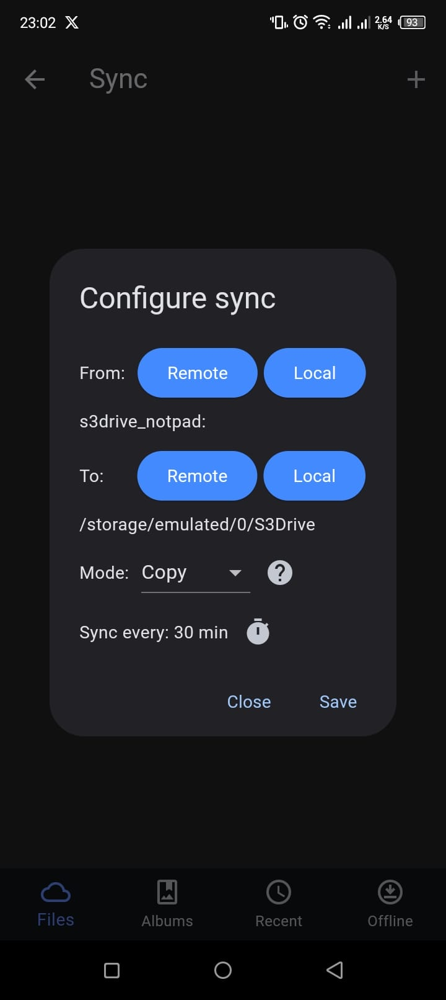Untuk pengaturan Mode, kita hanya bisa memilih Copy karena kita menggunakan S3Drive versi gratis. Untuk pengaturan waktu sinkronisasi biarkan saja 30 menit. Setelah itu klik Save dan Anda akan melihat tampilan seperti gambar dibawah ini.
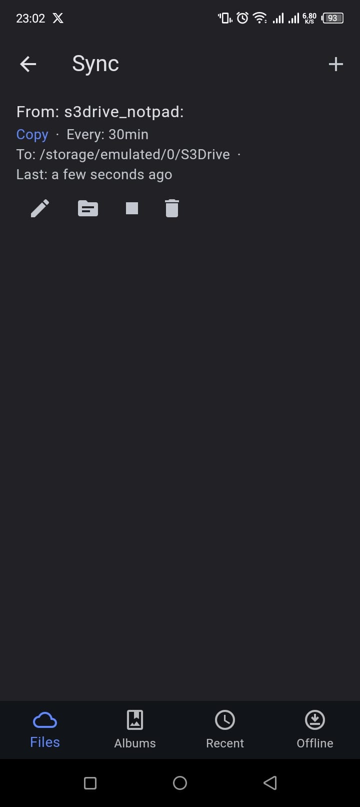File di cloud akan diunduh oleh S3Drive ke lokasi yang Anda pilih tadi, sehingga nanti kita bisa membuka notes & password kita menggunakan Cryptomator tanpa perlu koneksi internet.
Setelah proses sinkronisasi selesai, sekarang buka aplikasi Cryptomator di ponsel lalu klik tombol + di pojok kanan bawah kemudian pilih Add existing vault dan Anda akan melihat tampilan seperti gambar dibawah ini.
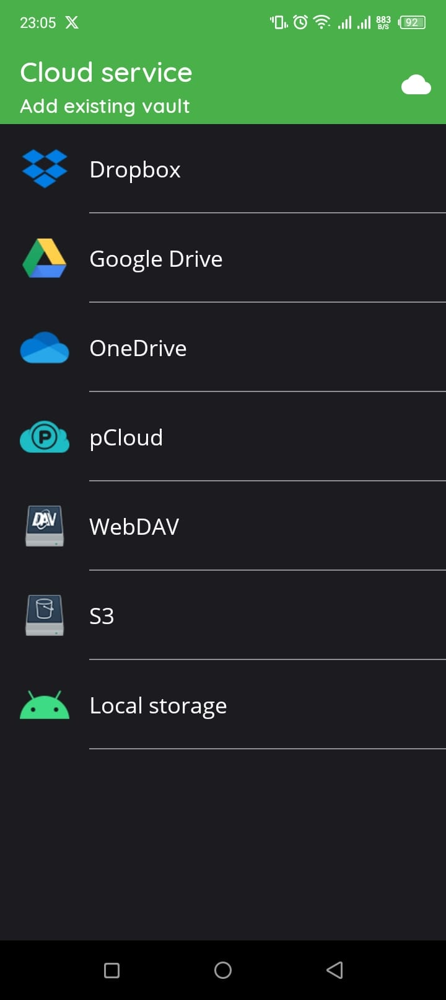Pilih Local storage kemudian klik tombol + di pojok kanan bawah. Anda akan diminta menentukan lokasi dimana vault Anda berada. Sekarang kita amati gambar dibawah ini.
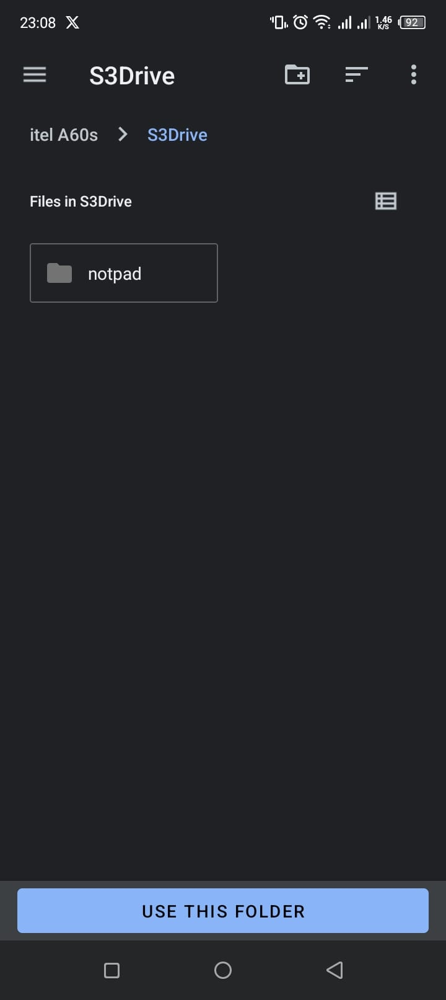Silahkan masuk ke folder yang Anda buat tadi, tapi jangan masuk ke folder bucket agar file vault pada bucket bisa kita buka di Cryptomator. Setelah itu klik tombol Use this folder dan Anda akan melihat tampilan seperti gambar dibawah ini.
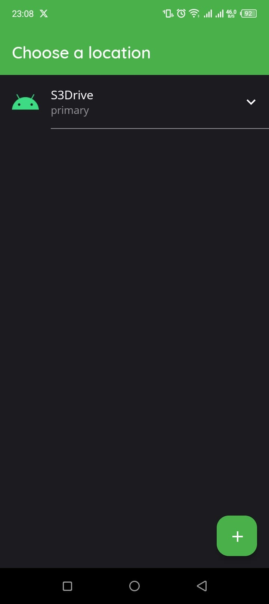Klik pilihan yang muncul tersebut kemudian dan Anda akan melihat tampilan seperti gambar dibawah ini.
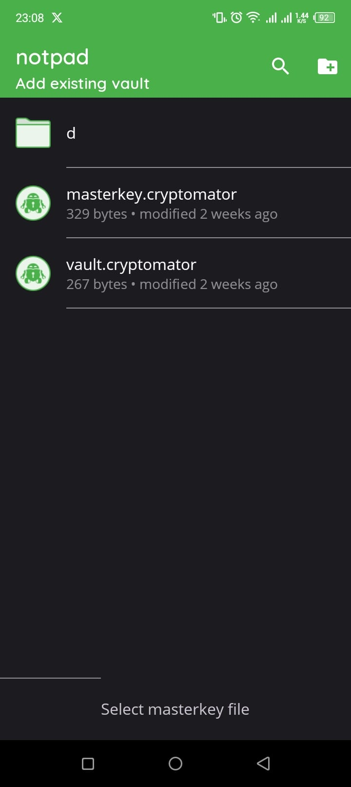Pilih vault.cryptomator dan Anda akan diarahkan kembali ke halaman utama cryptomator seperti gambar dibawah ini.
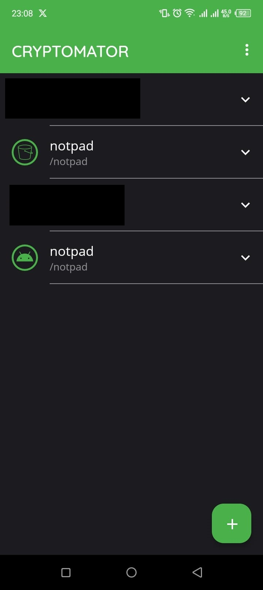Tampak ada 2 pilihan yang sama namun sebenarnya berbeda. notpad berlogo ember adalah notes & password kita yang ada di cloud, dimana untuk mengaksesnya dibutuhkan koneksi internet. notpad berlogo Android adalah notes & password kita yang ada di lokal (memori ponsel), sehingga bisa diakses tanpa koneksi internet.
Sekarang coba pilih notpad berlogo Android kemudian masukkan password yang Anda gunakan untuk mengakses notes & password yang ada di cloud. Akan tampil seperti gambar dibawah ini.
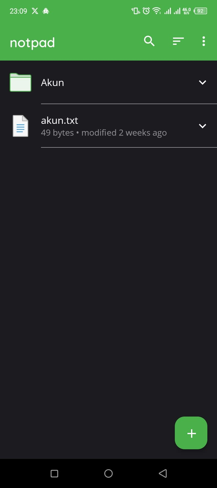Sekarang kita sudah bisa mengakses notes & password kita secara offline. Namun ada sedikit catatan jika kita mengakses notes & password kita secara offline.
Karena kita menggunakan mode Copy di S3Drive, maka jika kita menghapus data di cloud, data yang sudah terunduh di lokal tidak ikut terhapus. Itu karena mode Copy adalah sinkronisasi satu arah. Berbeda dengan mode Sync atau Two-way yang ada di S3Drive versi berbayar yang merupakan sinkronisasi dua arah. Perubahan yang dilakukan di salah satu sisi akan ikut mengubah sisi lainnya.
Jadi untuk lokal ini kita gunakan hanya sekedar untuk mirroring atau membuka notes & password saja. Untuk melakukan penambahan atau pengurangan notes & password tetap gunakan cloud.
Sekian tutorial dari saya, sampai berjumpa di lain waktu.
{kind=link}